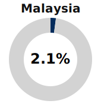
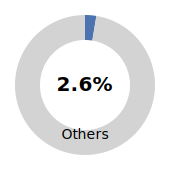
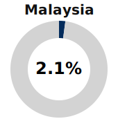
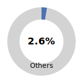

China is the central node in the global energy transition
China is the dominant actor in the global solar industry. It supplies the majority of the world’s photovoltaic manufacturing inputs and finished modules, and accounts for more than 80% of production across all major stages of the solar supply chain, while hosting 9 of the 10 largest PV manufacturers[1].
Distribution of Global Solar PV Module Production by Country, 2023
 



Source: Statista - Photovoltaic module manufacturing market share (2023)
In the context of renewables, it is important to distinguish between purchasing a fuel and acquiring a technology. Fossil energy must be continually extracted and imported, making states structurally dependent on external suppliers. Solar modules, by contrast, generate electricity for 25–35 years once installed, with no need for ongoing supply. Countries adopting solar are therefore not simply meeting current energy demand, they are making a long-term investment in productive capacity that reduces exposure to price volatility, geopolitical risk, and external supply disruptions. As Gabriel Davies notes[2], the efficiency of photovoltaic systems is largely scale-invariant, meaning distributed local installations can perform competitively relative to large centralized power plants.
As China's solar exports expand, the strategic implications vary across importing states. Some countries use Chinese modules to pursue energy sovereignty and decarbonization goals, while others import intermediate components to build domestic manufacturing capacity and compete upstream in the value chain. Understanding these differences is critical for interpreting both trade patterns and China’s parallel role as an overseas investor. This analysis examines where Chinese solar technology is being deployed, how major importers are positioning themselves within the global photovoltaic supply network, and in which markets China is choosing to invest directly in solar infrastructure.
Inside the supply chain

Source: IEA - Key stages in the main manufacturing process for solar PV.
Since 2022, the General Administration of Customs of the People's Republic of China (GACC) and the Ministry of Industry and Information Technology (MIIT) have begun reporting exports of panels, cells, and wafers separately. This change provides clearer visibility into the structure of China’s solar technology exports. Notably, exports of cells and wafers have grown rapidly, and together now account for more than 40% of China’s total solar technology export value. This indicates that China is not only supplying the world with finished panels, but also with the intermediate components that underpin manufacturing capacity elsewhere.
Source: Ember — China’s Solar PV Exports
Source: Ember — China’s Solar PV Exports
Two types of importers
Some countries rely on China to power solar deployment, while others rely on China to power their own manufacturing capabillity
China’s export relationships play two distinct roles. Among the top importers of Chinese solar technology, India, Vietnam, and Thailand use imported wafers and cells to expand their own manufacturing capacity. These countries are direct competitors in the global PV value chain, each pursuing industrial strategies aimed at capturing a greater share of upstream production[3]. In contrast, countries such as the Netherlands and Brazil primarily import finished modules to meet rapidly growing domestic deployment demand[4][5].
The distinction becomes visible in the data: countries importing mainly panels are focused on accelerating installation, while those importing cells and wafers are building or defending domestic production capacity. This pattern is particularly pronounced in Southeast Asia, where rising manufacturing investment signals a potential reconfiguration of the regional solar technology landscape.
Source: Ember — China’s Solar PV Exports
When China doesn't imports, it invests
China is also creating its own market
Although Asia appears as one of the main destinations for Chinese solar investment at the regional level, a country-level breakdown shows a more concentrated and strategic pattern. The majority of Asia’s investment allocation is directed to the United Arab Emirates rather than to the broader ASEAN region[6]. Political instability in several Southeast Asian states and historically weak enforcement institutions have raised risks of project delays, contract insecurity, and security exposure for foreign firms[7]. China has previously encountered such risks when infrastructure and resource investments in the region became vulnerable to governance volatility and localized conflict dynamics.
In the case of India, the limiting factor is not instability but strategic industrial competition. India is one of the world’s fastest-expanding solar producers and has introduced large-scale subsidy and tariff programs to displace Chinese inputs and grow its domestic manufacturing base[3]. The relationship is therefore competitive, not complementary: India imports intermediate components but does not represent a low-risk environment for equity-based Chinese capital deployment.
Source: WRI — China Overseas Finance Inventory Database
By contrast, Chinese solar investment tends to favor markets where policy stability aligns with long-term infrastructure finance and where energy transition commitments are institutionally backed. This is why the UAE accounts for most of Asia’s total; in Europe, Italy stands out due to grid-expansion financing frameworks; and in the Americas, Chile and Argentina emerge as major destinations due to fast-moving renewable integration and capital constraints in local markets[8]. The resulting investment geography reflects not regional preference, but a calculated approach to minimizing political and security risk while maximizing deployment stability and return predictability.
Source: WRI — China Overseas Finance Inventory Database
Sources
- Top ten solar PV module manufacturers show resilience in H1 2024 despite facing significant headwinds (Wood Mackenzie)
- The secret of the energy transition: why solar will reshape global politics (and be bad for Putin) - J ames E. Rogers Energy Access Project (Duke)
- India Mulls $1 Billion Subsidy Plan to Boost Solar Manufacturing (Bloomberg)
- Wind and solar power fuel over one-third of Brazil's electricity for first time (AP News)
- The Netherlands shines as key European energy transition driver (Reuters)
- China Overseas Finance Inventory Database (WRI)
- Asia and the Pacific in 2024: Elections, Economics, and Geopolitics (The Asia Foundation)
- World Energy Investment 2024 (IEA)